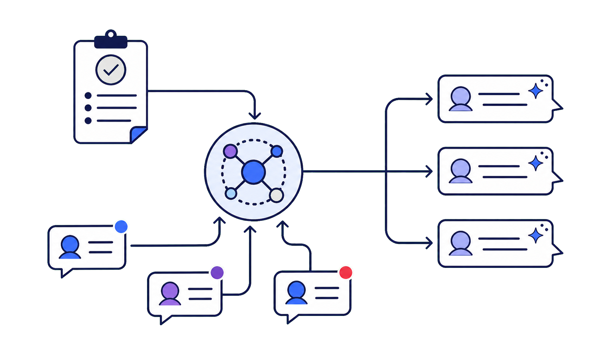

Web API は、画面を人が操作する代わりに、プログラムがHTTPで依頼を送り、結果を受け取る仕組み。
自分のコード
アプリ・HTML・サーバーなど、呼び出す側。
HTTPリクエスト
URL・キー・注文内容をまとめて送る。
結果が返る
JSONなどのデータを受け取り、画面や処理に使う。
ChatGPT の画面は人間が会話する場所。LLM API は、プログラムが入力・指示・設定を送る入口。 返ってきた文章を、自分のアプリで自由に使える。
今日はこの入口を配布HTMLから直接叩く
Responses API には previous_response_id / conversation もある。今日は手で履歴を渡す方式
キーを持つ誰でも、あなたの口座でAIを呼べる。流出＝そのまま請求になる。
今日のツールは研修用。本番ではブラウザJSに置かず、サーバーの環境変数や鍵管理から呼ぶ
Slackで配布したHTMLを開いて、自分のキーで最初の返事を画面に出す。
今日の出発点はここ。
コードの中の body が、AIへの注文書。ここを書き換えるのが今日の操作の中心。
トークンは、文章をAIが扱うための細かい単位。入力と出力で別々に数え、モデルごとに単価が違う。
短いやり取りなら何十回分、長文資料なら数ページ分の材料。日本語は文章で変わるので、実行後の usage を見る。
OpenAI公式Pricingをもとに、1ドル=160円で概算。価格は変わるため最新は公式を確認
instructions は毎回必ず効く“共通ルール”。口調や役割をここで固定し、 ユーザーの入力（input）だけを変える。これが実アプリの形。
同じルールを固定すると、アプリの振る舞いが安定する

同じ質問のまま instructions だけ変えて、答えの激変を体感する。
top_p は温度の親戚（今日は触らずでOK）。reasoning.effort は応用編
APIはプログラム用の入口
// 画面でなくコードから・今日は手で履歴を渡す・従量課金
注文書(body)を自分で書き換える
// モデル・instructions・パラメータ
キーは鍵かつ請求書
// 研修用はブラウザ内・本番はサーバー側・流出は即無効化
次の一歩 — function calling / tool use / streaming / web検索・画像生成